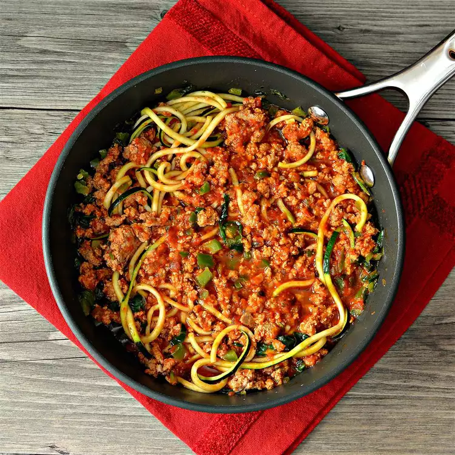

How to Make Turkey Spaghetti Zoodles
Ingredients
- teaspoon extra-virgin olive oil
- 1 ¼ pounds ground turkey breast
- 1 cup diced green bell pepper
- 1 tablespoon minced garlic
- 2 teaspoons Italian seasoning
- ½ teaspoon ground black pepper
- ¼ teaspoon salt
- ¼ teaspoon red pepper flakes
- 3 cups marinara sauce
- 2 cups baby spinach leaves
- 4 zucchini, cut into noodle-shape strands
Directions
-
Heat olive oil in a large skillet over medium heat. Add
turkey breast, green pepper, garlic, Italian seasoning,
ground black pepper, salt, and red pepper flakes; cook and
stir until turkey is lightly browned, 4 to 5 minutes.
-
Stir marinara sauce and baby spinach into the turkey
mixture; cook and stir until marinara sauce is warm through,
about 3 minutes.
-
Stir zucchini noodles into the sauce with tongs; cook and
stir until the zucchini is slightly tender, 2 to 3 minutes.
Nutrition Facts
| Calories |
Fat |
Carbs |
Protein |
| 301 |
6g |
27g |
34g |
Original recipe